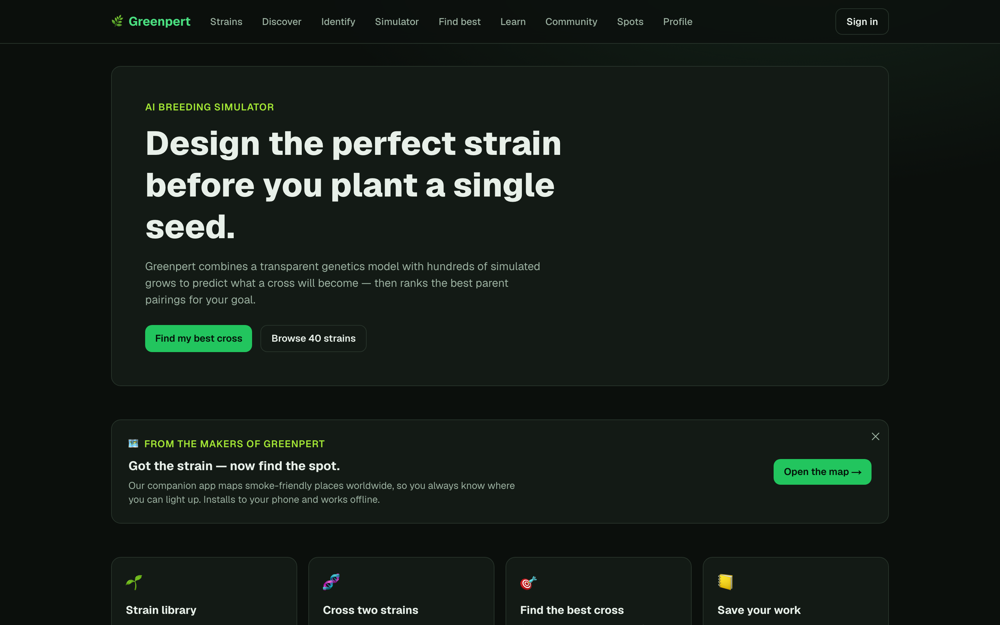
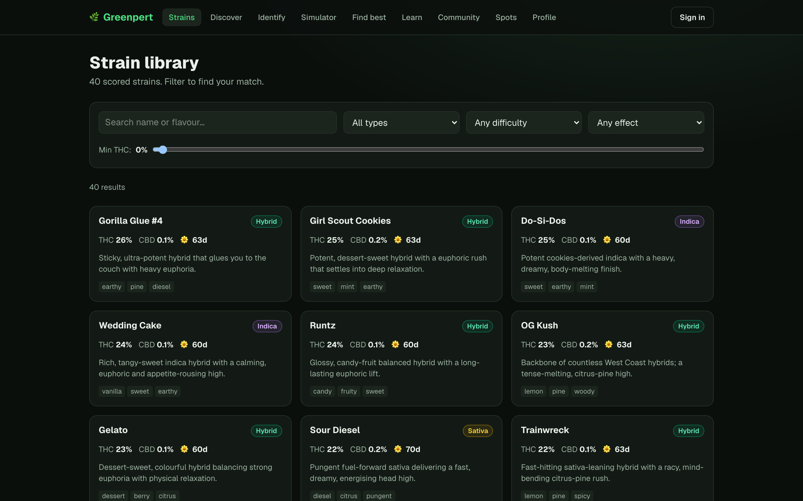
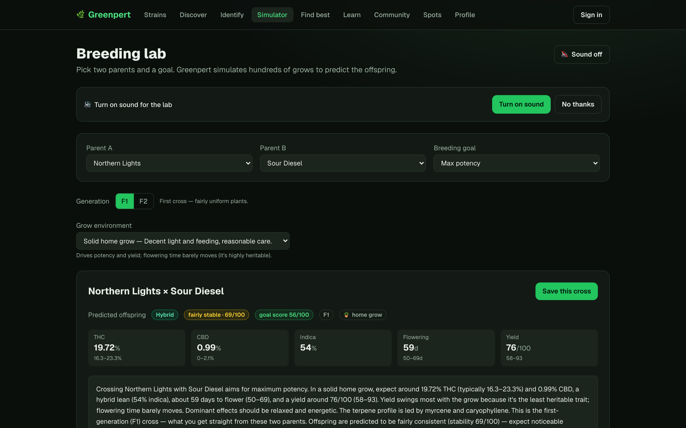
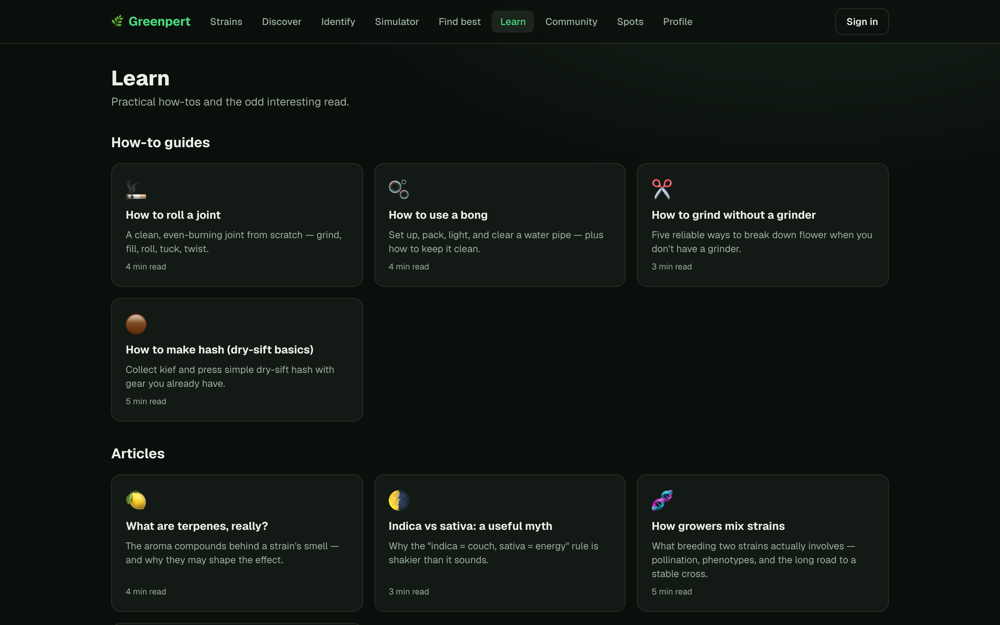
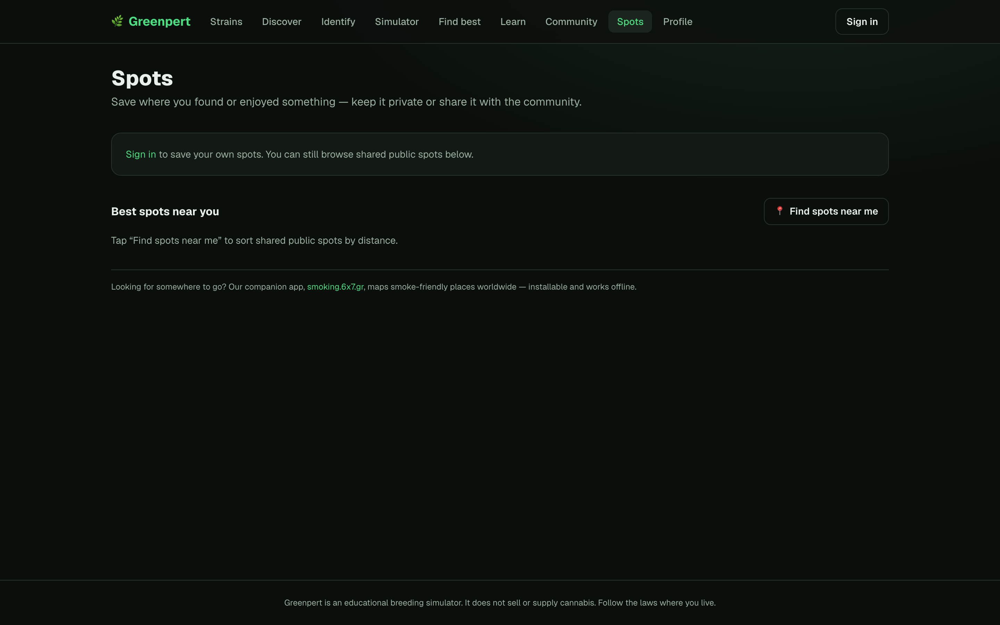

Point it at a list of pages, and it screenshots each one and builds a tidy, clickable grid you can paste straight into your GitHub README — powered by a plain headless browser.
Five pages of one web app. Click any shot to open it full-size — exactly what the tool drops into your README.





This exact grid was generated by the tool, then pasted into a README — no editing by hand.
No accounts, no cloud service, no API keys. Everything runs locally with a headless Chromium.
Grab the repo and let Playwright download a one-time Chromium browser.
Edit apps.json with the pages you want. Add a dismiss list to click through age-gates or cookie banners first.
One command screenshots every page and rewrites your README with the grid. Re-run any time.
Copy, paste, done.
# clone, then: npm install npx playwright install chromium # one-time browser download npm run build # screenshot every page + rebuild README # other handy commands npm run shots # re-screenshot only npm run grid # rebuild README from existing shots (COLS=4 to force columns)
More screenshots, denser grid — the column count adapts automatically so it always fits GitHub's preview width.
| Screenshots | Columns |
|---|---|
| 1–2 | matches the count |
| 3–4 | 2 columns |
| 5–9 | 3 columns |
| 10–16 | 4 columns |
| 17+ | 5 columns |
Built your grid? Turn it into a demo or promo video — and more — over at demo.6x7.gr.
{kind=link}
{kind=link}
{kind=link}
{kind=link}
{kind=link}